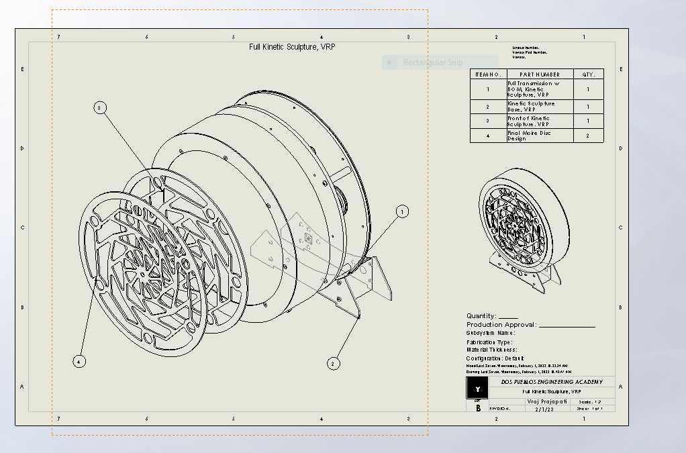
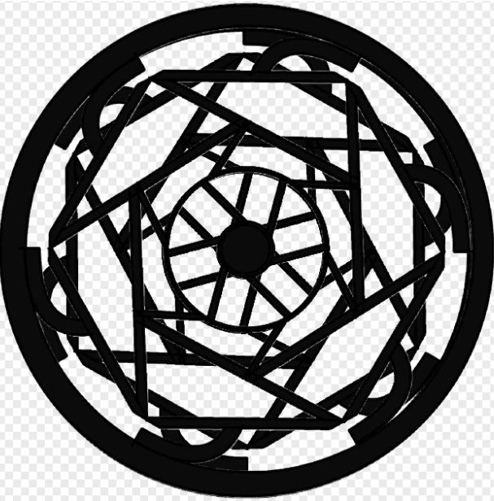
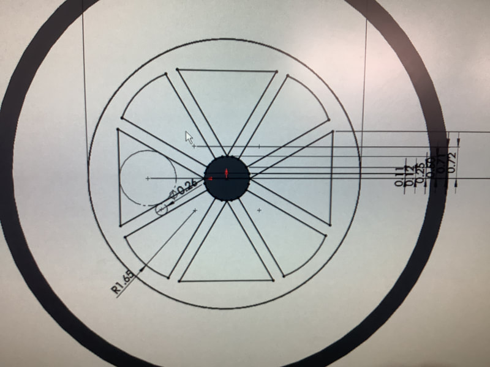
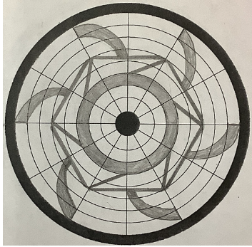
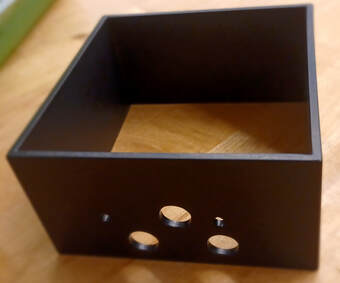

Three individual mechatronics builds completed at the Dos Pueblos Engineering Academy—taking each project from hand-drawn concept studies through SolidWorks CAD, manual machining, custom PCB soldering, and microcontroller firmware.
Belt-and-pulley transmission driving two laser-cut moiré discs at independent speeds with ultrasonic proximity-reactive LED lighting.
Organization
Dos Pueblos Engineering Academy
Role
Individual Designer, Machinist & Programmer
Assembly Scale
Several Hundred Discrete Components
Finished Kinetic Sculpture running with backlit moiré interference pattern.

Full SolidWorks assembly drawing used for shop fabrication.
This multi-disciplinary mechatronics project uses a dual-motor pulley transmission to spin two custom moiré discs at independent speeds and directions, generating continuously shifting optical interference patterns as the cutouts pass in and out of phase. The build integrates a hand-soldered PCB for dual-motor and LED control, an ultrasonic rangefinder for viewer proximity sensing, and a multi-hundred-part machined and fastened structure.
Optical & Mechanical CAD Design
The disc geometry began as pencil moiré studies before evolving into an interlocking polygon pattern tuned for strong visual interference. Every mechanical part was modeled in SolidWorks with full assembly drawings generated for fabrication. When one disc extrusion triggered a persistent parallel-extrusion constraint conflict, resolving it required isolating the over-constrained sketch entities, redrawing the affected profile, and re-establishing clean geometric relations—practical troubleshooting that directly supported my CSWA (Certified SOLIDWORKS Associate) exam preparation.

Initial pencil concept study for moiré geometry.

Parametric moiré cutout sketch in SolidWorks.Finalized digital disc pattern prior to laser cutting.
Shop Fabrication & Precision Assembly
The primary vertical column and structural brackets were machined from stock on a Hardinge lathe and manual vertical mill, using edge-finder datum pickups and peck-drilling cycles for deep chip-clearing holes. Laser-cut disc blanks were hand-deburred prior to anodizing, and Delrin standoffs were tapped 6-32 for durable fastener engagement. Bearings were pressed into the transmission plate on an arbor press to keep bores square, and subassemblies were secured with 4-40, 6-32, and 8-32 hardware verified with calipers.
Drilling center mounting holes on a disc blank.Machined and 6-32 tapped Delrin spacers.Transmission plate with arbor-pressed bearings.
PCB Soldering, Embedded Firmware & Debugging
I populated and soldered the control PCB from scratch, paying close attention to electrolytic capacitor polarity so both H-bridge motor channels could drive bidirectional rotation. The Arduino (C/C++) firmware sequences independent speed and direction profiles for the two motors and polls an ultrasonic sensor so lighting and motion react to nearby viewers. Final wiring harnesses were dressed with heat-shrink tubing and zip ties.
During bench testing, the LED strip inside the outer hoop flickered intermittently; isolating the fault required partial disassembly and continuity probing across solder joints until the connection held reliably under vibration.
SolidWorks (CSWA Prep)
Hardinge Lathe & Manual Mill
Arbor Press & Tapping
Through-Hole PCB Soldering
Arduino (C/C++)
Ultrasonic Rangefinding
Completed Kinetic Sculpture operating with dual-disc moiré interference.
Kinetic Sculpture Build Archive
Structural bracket part model in SolidWorks.Sculpture base, SolidWorks render.Illuminated moiré discs rotating during test.

Completed moiré disc housing assembly.Assembled sculpture on the test bench.Tapped Delrin spacer detail.Final assembly and alignment verification.Completed build following final inspection.Manual mill executing final boring pass.
Machined and anodized aluminum housing with backlit acrylic rods, custom LED driver circuitry, and a lathe-turned Delrin control knob.
Organization
Dos Pueblos Engineering Academy
Role
Individual Designer, Machinist & Programmer
Schedule Constraint
Delivered 2 Weeks Ahead of Deadline
Assembled three-pole acrylic rod cluster illuminated during operation.Multi-view technical drawing (MVD) used for shop fabrication.
This fabricated metal light sculpture pairs a three-pole clear acrylic rod cluster with a custom LED driver circuit and a precision-turned Delrin potentiometer knob for real-time brightness and mode control, programmed with a tricolor lighting sequence inspired by the Indian flag.
After developing a 3D form study, I documented every component in a dimensioned multi-view technical drawing (MVD) prior to stepping onto the machines. On the manual mill, I used edge-finder pickups and peck-drilling cycles to machine the aluminum base and top plate before prepping them for anodizing. The potentiometer knob was turned from Delrin on the lathe to hold a snug, play-free press fit onto the control shaft.
On the electronics side, I soldered the LED, current-limiting resistor, and potentiometer circuit onto a compact board and logged per-channel voltage and current draw as part of a circuit power-dissipation check. An upcoming two-week family trip compressed my build window, requiring disciplined shop-time planning to finish machining, soldering, and firmware two weeks ahead of the class deadline without cutting scope.
Drilled and anodized aluminum mounting plate.Per-channel voltage, current, and power measurements.

Completed anodized enclosure housing.
Multi-View Technical Drawings
Manual Mill & Lathe
Anodizing Prep
Circuit Power Characterization
Microcontroller Firmware
Light Sculpture Build Archive
Rod cluster assembly, CAD render.Clear acrylic rod cluster prior to wiring.Rod cluster dry-fitted onto base plate.Machined aluminum enclosure pre-assembly.Machined Delrin rod-mounting spacer.Shop practice piece: machined metal pendant.
Multi-layer perspective shadow box with photoresistor feedback control that automatically illuminates in low ambient light.
Organization
Dos Pueblos Engineering Academy
Role
Individual Design, Fabrication & Firmware
Completed shadow box triggered automatically in low ambient light.LED array and photoresistor voltage-divider wiring schematic.
This build combines a hand-drafted two-point perspective illustration with layered diffuser cutouts, a shop-built wooden frame, and an Arduino-controlled LED backlight driven by a photoresistor voltage divider so the display switches on automatically as room light drops.
Layered Framing & Analog Sensor Control
I drafted the foreground scene using architectural two-point perspective before modeling the rear and mid-layer acrylic panels in SolidWorks for laser cutting. The hardwood perimeter frame was cut in the woodshop and pressed together on an arbor press for a tight, glue-free mechanical joint.
After verifying series-parallel LED current draw on a breadboard, I transferred the circuit onto a soldered perfboard mounted to the rear panel with Velcro for easy access. The Arduino firmware reads the analog photoresistor voltage divider against a calibrated darkness threshold and steps through array-indexed LED lighting states automatically.
Completed two-point perspective artwork.Dimensioned CAD print for acrylic back plate.Rear electronics assembly powered during bench test.
Two-Point Perspective Drafting
SolidWorks & Laser Cutting
Woodworking & Arbor Press
Breadboarding & PCB Assembly
Arduino Analog Input & Arrays
Shadow Box Build Archive
Wooden frame stock prior to assembly.Diffuser layer stack for depth separation.Moon-and-star diffuser mask cutout.Frame dry-fit with uncolored line drawing.Press-fitting frame joints on the arbor press.Colored illustration seated in finished frame.Early Arduino firmware function test.Array-indexed LED channel firmware.